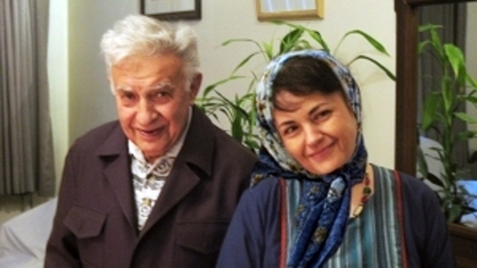

|
|
شیرین عبادی : هاله جان آزادیت مبارک
چهار شنبه11 خرداد 1390

تغییر برای برابری -
هاله عزیز ، وقتی که به حکم دادگاه انقلاب به دو سال حبس محکوم شدی ، ما فعالین جنبش زنان همگی نگرانت بودیم ، و تو با لبخند می گفتی که خاندان سحابی به این گونه نا ملایمات عادت دارند.
زمانی که پدر بزرگوارت در بستر بیماری افتاده بود، همه دوستان بی تاب آمدنت بودند تا آخرین حرف های پدر را بشنوی ، اما تو که در بند ظالمان اسیر بودی با کمال شجاعت حاضر نشدی هیچ گونه تعهدی را تضمین آزادیت کنی.
هنگام تصویب قوانین تبعیض آمیز علیه زنان فریاد بر آوردی که قوانین ضد زن ناشی از کج فهمی حاکمان است و اسلام بر کسی ستم روا نمی دارد .
هاله عزیز، مرگ در بستر شایسته تو نبود ، تو با مرگ شهادت گونه ات زور گویان را رسوا کردی. و چه دردناک است که پیکر بی جانت را همانند مرادت حضرت فاطمه زهرا (س) ، مخفیانه و در سکوت شب به خاک سپردند. خداوند با فاطمه اطهر محشورت دارد.
شیرین عبادی
۱۱ خرداد ۱۳۹۰ شمسی